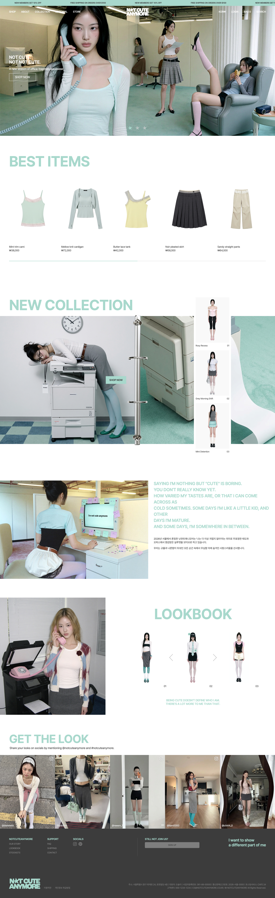

Project
Not Cute
Anymore
(03)
- Project Type
- New Identity
- Tools
- HTML, Javascript, CSS, Photoshop, Illustrator, Midjourney, Higgsfield
- Role
- UI/UX Design, Web Publishing, Web Redesign
Description
NOTCUTEANYMORE는 아일릿의 'Not Cute Anymore'가 지닌 비주얼 무드에서 출발해, "이 곡이 패션 브랜드라면?"이라는 질문을 웹사이트로 구현한 브랜드 프로젝트입니다.
오피스-스쿨 하이브리드 캐주얼웨어를 컨셉으로, Midjourney로 무드탐색 및 메인 모델을 생성했고 Higgsfield와 Nano Banana를 통해 동일한 메인 모델의 일관된 페이스를 유지하며 완성도 높은 캠페인 비주얼을 구축했습니다.
무표정한 태도 아래 은근히 드러나는 귀여움이라는 아이러니한 감성을 브랜드 아이덴티티와 카피, 제품 전반에 녹여냈습니다. 나아가 룩북 핫스팟, Get The Look 팝업 등 직관적인 인터랙션 요소를 배치하여 브랜드의 독창적인 톤앤매너와 인터랙티브한 기능이 완벽히 하나로 작동하는 UX 경험을 전달합니다.
Year
2026.08

0%
Scroll
